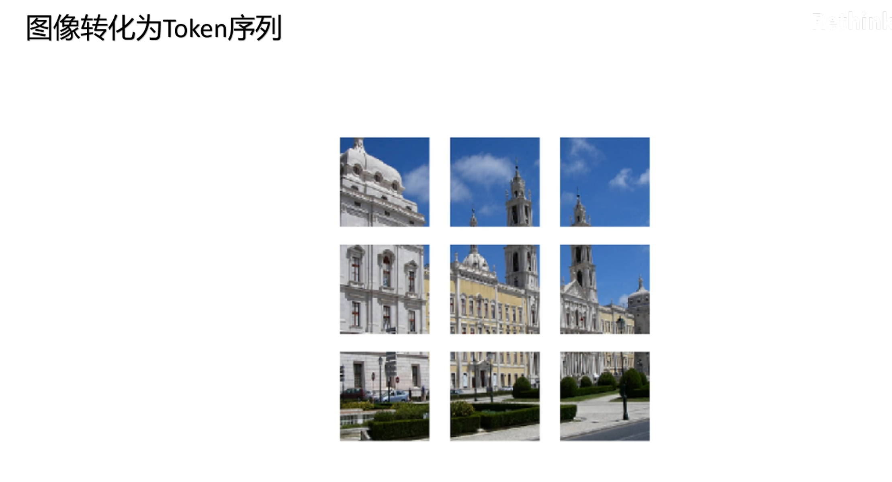
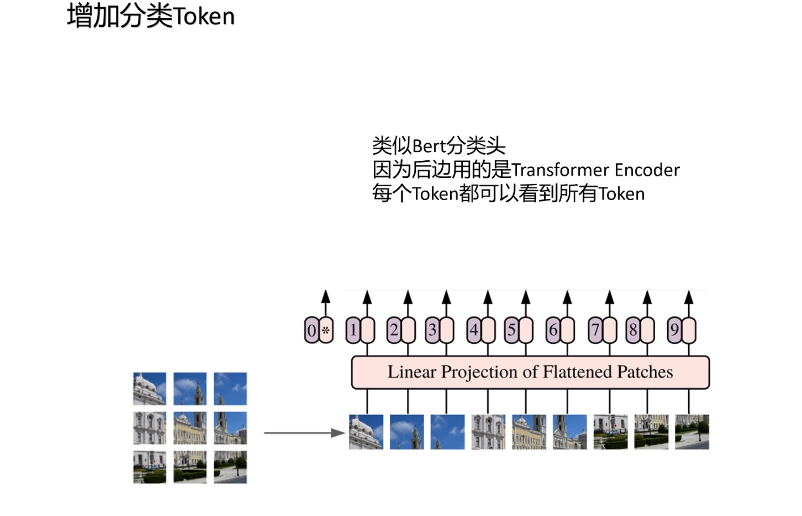
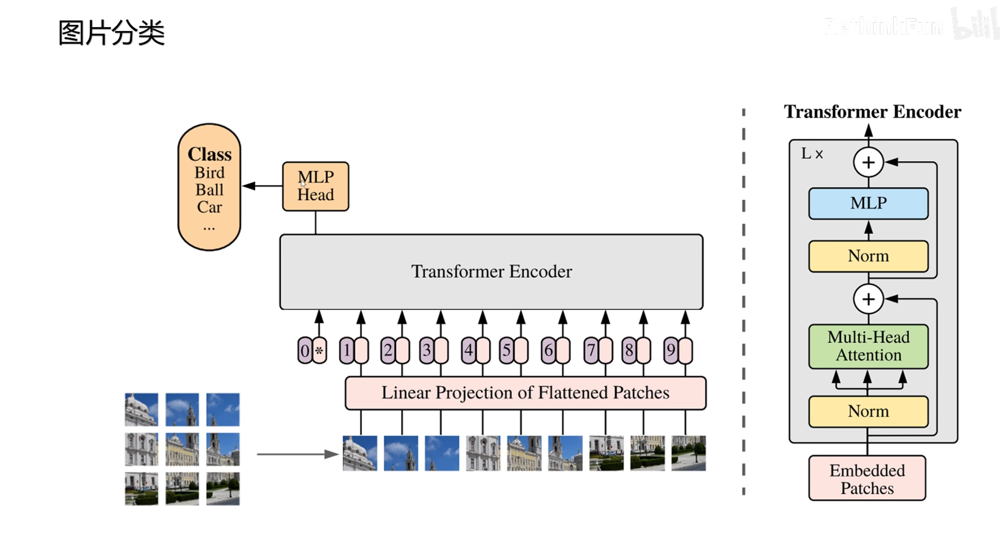
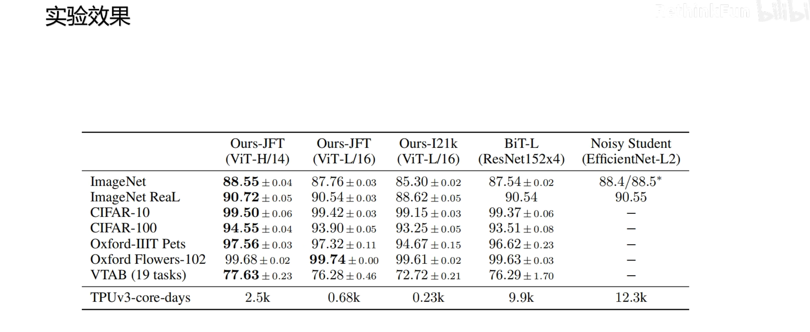
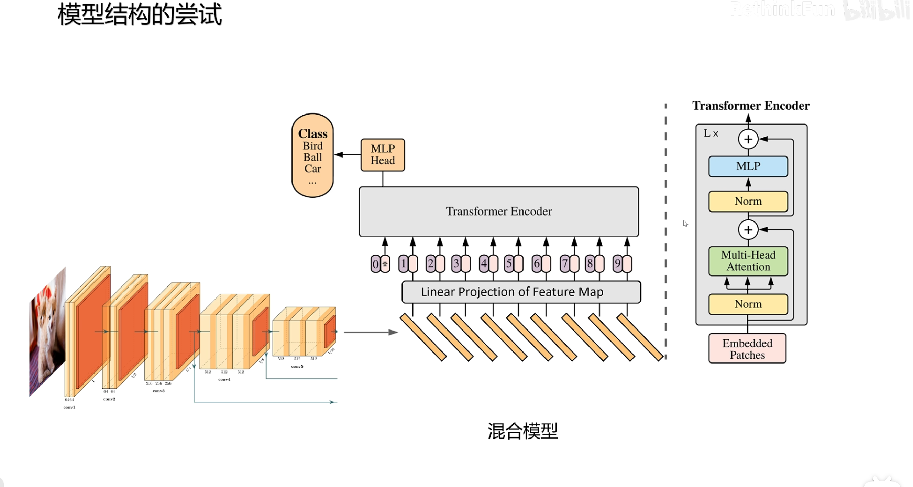

ViT¶

一句话：纯 Transformer 解决计算机视觉问题
并且在不同规模的数据集下与 CNN 进行对比，探讨 Transformer 的优势
ViT 的结论¶

- ViT 证明了 Transformer 模型的通用性
Transformer 架构的评价：¶
训练效率高，可以通过注意力提取复杂语义，可以支持多种模态，并且结构简单，可以自由扩展模型大小，即使使用千亿级别的参数规模的模型依然没有出现性能饱和，ViT 为多模态大模型铺平了道路，Transformer 架构的统一，也让基于 Transformer 架构的工程优化，可以直接应用于计算机视觉和多模态领域
想法是：
对 Transformer 模型不做任何的修改 来完成对图像的分类任务，如果模型不能改变，那就改变图片数据，让图片数据变得像文本，所以 ViT 论文的题目：一张图像=16×16 的词
ViT 是如何将图片转换成文本的呢？¶

将图片划分成固定大小的 patch，论文中输入图片 224×224，如果 patch 大小为 14×14，则可以分为 16×16 的序列，不按照单个像素划分的原因是会导致序列长度过长，计算复杂度太高
（1）一个像素只有 RGB 3个值，语义信息太少，用一个长度几百上千的向量只做一个像素的 embedding，浪费计算资源，所以选择一个 patch 作为一个语义单元，对应文本中的一个 token
（2）相邻像素语义相似
图像 patch 如何文本中对应的 embedding 向量呢？¶
将
patch的长×宽×通道数的多维矩阵表示展平，然后通过一个共享的线性层投射到 Transformer 模型里的特征维度，比如 1024，这样就完成了把一个图片转换成一个向量序列的转换，图像切片相当于文本里面的分词，线性投射层相当于 embedding 层，接下来需要考虑位置编码。
ViT 中的位置编码¶

ViT 中为每个位置加上 1 个可学习的位置编码，比如图中有 9 个不同的可学习的位置编码，因为 ViT 做的任务是要对图片进行分类，参考自然语言处理里的 Bert 模型的做法，在最前面加上一个可学习的用来分类的 token，并且有自己可学习的位置编码，因为后续采用的Transformer 的 Encoder 架构，每个 token 无论是在序列里的什么位置都可以看到所有的其他 token，所以即使把这个 token 固定到第 1 个位置上，也可以汇集所有图像 patch 的信息，网络结构采用的也是 Transformer 中的 Encoder

ViT 采用的是 Transformer Encoder 架构¶

传统的大模型采用的是 decoder，因为大模型一般是做生成任务的
而图片分类是做信息提取的，所以用类似 Bert 的架构，采用 Encoder 的模块，最后通过第一个位置的分类 token 的信息，加上一个简单的 MLP头进行图片的分类

类似于 Bert，ViT 也训练了不同大小的模型，分为 Base、Large、Huge，分别有不同的层数、hidden size、MLP size和注意力头

对于 ViT 模型的表示，一般会用类似于 ViT-L /16来进行表示，表示这是一个 ViT Large 模型，其中 patch 的大小为 16×16
patch越小，一张图片分出来的 patch 就越多，输入到 Transformer 中的序列就越长，计算复杂度就越高，模型效果也越好
实验效果¶

作者选择了当时在不同数据集上表现最好的分类模型：ResNet 和 EfficientNet 进行比较，可以看到在 JFT 数据集上进行预训练，然后在不同的数据集上进行测试，ViT-H/14 模型几乎都取得了最好的成绩
特别需要注意的是最后一行，在 GPU V3 的核数×训练天数 表示的计算代价上，ViT 模型具有非常大的优势，所以说在大规模图像数据集上，训练 ViT 模型更有优势
实现细节¶
实现细节：图像转换成 embedding 的两种方式（看图）¶
线性：
input \(224*224*3\)
patch \(16 * 16 * 3 = 768\)
#num \(14*14=\)196个 patch
\(196*768 → 196 * 1024\)
卷积：
input \(224*224*3\)
kernel $16 * 16 * 3 $
#kernel = 1024
output \(1024*14*14\)
flatten feature map \(1024*14*14 → 1024 * 196\)

- 卷积操作相比线性映射省去了 patch 切分的操作
- 卷积输出：
1024×输出特征图大小（图 卷 图→ 图 → flatten）
实现细节：位置编码的选择¶

作者原文关于位置编码所做的实验：
（1）不加位置编码
（2）1 维位置编码
（3）2 维位置编码
（4）相对位置编码
比如 图中将图片切分为 9 个 patch
对于 1 维位置编码而言，就是生成 9 个可学习的位置编码，每个位置编码的长度都和特征维度一样，为 1024
对于 2 维位置编码，生成 3 个表示行的可学习的位置编码，3 个表示列的可学习的位置编码， 长度都为特征长度的一半 512 ，通过行列特征的拼接来构成 1 个二维位置编码，比如对于第 2 行第 1 列的 patch，它的位置编码就是取第 2个行位置编码拼接上第 1 列位置编码构成的
通过实验发现，不加位置编码效果最差，而其余的位置编码由表可知，效果是差不多的
思考：为什么不加位置编码效果也还可以（0.61382），并没有差太多？
这是因为图片被切成了 patch，patch 内部是含有位置信息的，就像上面的图片，它的 patch即使被打乱了位置也可以看出来是1 个建筑的图片
位置编码的进一步研究¶

在原文中，作者对位置编码进行了进一步的研究
通过 1 维位置编码也是能够学习到 2 维信息的，比如这里这个位置编码的相关性的图，可以看到和每个 patch位置编码最相关的还是自己附近的以及自己所在行列的 patch
另外作者研究发现随着 Encoder 层的增加，每个注意力头关注的平均像素距离可以看到不同于卷积神经网络，在网络浅层有的头关注近距离的像素，但是也有很多头已经关注到了远距离的像素，随着模型层数的加深，模型越来越关注远距离的全局信息了
对于模型结构的尝试¶

关于模型结构的尝试，作者选择了三种结构进行对比
一种是原始的卷积神经网络，比如 ResNet
一种是只用 Transformer 的 ViT
最后一种 卷积神经网络和 Transformer 的混合模型
介绍混合模型的模型架构¶
首先由卷积神经网络来提取特征，最后在提取的特征每个空间位置就是一个图像的 patch，然后再做线性映射进入 Transformer Encoder
图中，圆形表示 ViT，方形表示 ResNet，加号表示混合模型

可以看到，在相同的预训练代价下，刚开始混合模型有优势，但是随着计算代价的增大，也就是模型的增大，最终 ViT 模型的效果还是略好于混合模型，所以证明了 Transformer 架构在视觉领域完全可以取代卷积神经网络
对于图片分类通常也有两种做法¶

一种是 通过在序列第一个位置增加一个分类token 来提取图像的全局信息
一种 不额外增加 token，就用所有图像 patch 最后一层输出的全局平均池化来做全局信息
作者做了比较，两个效果是类似的
训练数据集大小对模型的影响¶

图片中方块表示的是不同大小的 ResNet 在不同规模数据集上的表现，圆形表示的是不同大小的 ViT 在不同规模数据集上的表现，可以看到在小规模数据集上 ResNet 表现好于 ViT
而随着数据集规模的增大，ViT 的效果 是好于 ResNet 的，所以通过这个图可以知道，在百万级别的数据集上 ResNet 好于 ViT，千万级别的数据上 ResNet 和 ViT 差不多，亿级别的数据上，ResNet 不如 ViT
⭐️为什么在小的数据集上的训练 ViT不如 ResNet？¶
这是由归纳偏置引起的
什么是归纳偏置？
归纳偏置就是在训练模型时人为引入的先验知识给模型，这些知识是人给的，不是模型从数据中学来的，比如卷积操作中，每一层都有两个归纳偏置：（1）局部性（2）平移不变性
卷积核为什么只作用在一张图片的局部呢？
因为图片相关信息都集中在局部
卷积核为什么在图片上进行平移？
因为物体不论是在图片上的什么位置，物体的特征是不变的
以上两点先验知识都给了模型，所以模型学习起来相对简单
这个归纳偏置，在卷积神经网络的每一层都起作用，但是 ViT 采用的 Transformer架构，引入的归纳偏置比较少，就是在切分 patch 时引入了局部性，因为把原始图片划分成了 patch，而不是随机取一些像素，还有就是对所有的 patch，都用同样的线性层进行 embedding，这里相当于引入了平移不变性
但是 ViT 只是在切分 patch 和对 patch 进行编码时引入了归纳偏置，后面的注意力计算是完全没有引入归纳偏置的，所以导致了 ViT 在小规模数据集上学习比 ResNet 要慢一些

自监督学习¶

最后，ViT 的作者还尝试了让图片进行自监督学习，因为有标记的数据总是少数的，想让模型取得大规模的数据集取得突破性的进展，一定要是自监督学习，就像 Bert 的成功和 GPT 的成功
作者在尝试自监督学习时，借鉴了 Bert 的做法，具体操作：
将 50%的图像 patch 进行标记，在这些标记的 patch 中 80%将 embedding 替换成可学习的 mask 标签，10%的 embedding 替换为其他的 patch embedding，10%的 embedding 保持不变，最终让利用标记的这些 patch 的输出预测原始图片的像素值
为了简化问题，将原来 RGB \(255*255*255\) 一共 1658 万多种颜色简化到 RGB 分别对应 8 个值 \(8*8*8\) 一共 256 种颜色
最终的效果非常不错
ViT 打开了 Transformer 架构处理计算机视觉和多模态数据的大门，让多模态通用人工智能成为可能